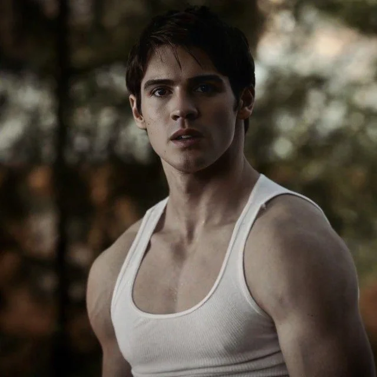

Welcome to Mystic Falls

Jeremy Gilbert is Elena's younger brother who becomes a vampire hunter. He is protective of his family and friends, and despite his initial struggles with loss and grief, he grows into a strong and capable supernatural hunter. Jeremy has died and been resurrected multiple times throughout the series.
Jeremy was born and raised in Mystic Falls. After losing his parents in a car accident, he struggled with grief and turned to drugs. He later discovers he is a member of the Gilbert family, which has a history of vampire hunting. He becomes a hunter himself and gains the ability to see supernatural beings in their true form, including vampires, werewolves, and other creatures. As a vampire hunter, Jeremy is skilled in combat and uses various weapons to hunt vampires. He has been resurrected multiple times, showing his resilience and importance to the group.
Jeremy is known for his protective nature, loyalty, and resilience. Despite facing immense loss and tragedy at a young age, he grows into a strong and capable young man. He is fiercely protective of his sister Elena and his friends, often putting himself in danger to keep them safe.
Jeremy's greatest strength is his ability to overcome adversity and grow from his experiences. He transforms from a troubled teenager struggling with grief and addiction into a skilled vampire hunter who fights alongside his friends. His relationships with various supernatural beings, including vampires he falls in love with, show his capacity for understanding and compassion despite his hunter nature.
Throughout the series, Jeremy struggles with loss, grief, and the weight of being a hunter in a world full of supernatural beings. He forms deep connections with those around him, including his romantic relationships with Anna and Bonnie. Jeremy's journey from a grieving, lost teenager to a confident hunter who protects his loved ones is a testament to his strength and determination.
Since The Vampire Diaries ended in 2017, Steven R. McQueen has continued his acting career. He has appeared in various film and television projects, including roles in "Chicago Fire" and other television series.
Steven remains active in the entertainment industry and continues to take on diverse roles that showcase his range as an actor. His portrayal of Jeremy Gilbert, a character who transformed from a troubled teenager to a capable hunter, remains one of his notable performances.
Steven has also been involved in various projects and continues to maintain a connection with his fans. His portrayal of Jeremy Gilbert, a character who consistently protected his loved ones despite personal struggles, remains one of the memorable characters in supernatural television.
Steven R. McQueen - Steven portrayed Jeremy's journey from a troubled teenager to a capable vampire hunter.